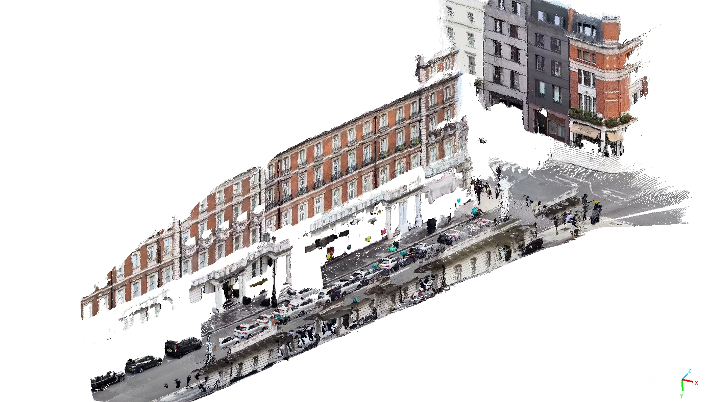

Video geometry
LoFT
Looped Foundation Transformer for Video Geometry
Reconstructing 3D scenes from RGB video through temporal attention and iterative camera refinement.

Overview
From video
to 3D.
Adjacent video frames often see the same surface. Views farther apart reveal how that surface sits in 3D.
LoFT uses both. One loop gathers visual evidence across an ordered clip. A second loop refines each camera using its previous estimate. The resulting cameras place per-frame depth maps in a shared coordinate system.
- Training datasets
- 80
- Sequences
- 2.97M
- Images
- 961.8M
Method
Two loops for video geometry.

Visual aggregation
Local attention expands from 3 to 5, 9, and 17 frames. Between these local steps, every frame attends to the full clip, including distant views of the same place.
Camera refinement
Each iteration predicts pose and field of view, then feeds the updated camera state into the next iteration. A dense head decodes depth and confidence once per frame.

LoFT achieves the lowest depth AbsRel and highest pose AUC at 30° among the ranked methods on each of the four evaluation splits.
| Benchmark | AbsRel ↓ | δ1.03 ↑ | AUC@3° ↑ | AUC@30° ↑ | ATE ↓ |
|---|---|---|---|---|---|
| SpatialBench Full | 0.0637 | 0.6959 | 0.4767 | 0.8341 | 0.5041 |
| SpatialBench Continuous | 0.0734 | 0.6765 | 0.4757 | 0.8342 | 0.2131 |
| ClassicBench | 0.1316 | 0.5464 | 0.3506 | 0.7623 | 0.5015 |
| VRBench | 0.0852 | 0.5751 | 0.3879 | 0.8271 | 0.2973 |
SpatialBench uses the Medium set. AbsRel and δ measure depth accuracy, AUC measures relative camera pose, and ATE measures trajectory error.
Demo